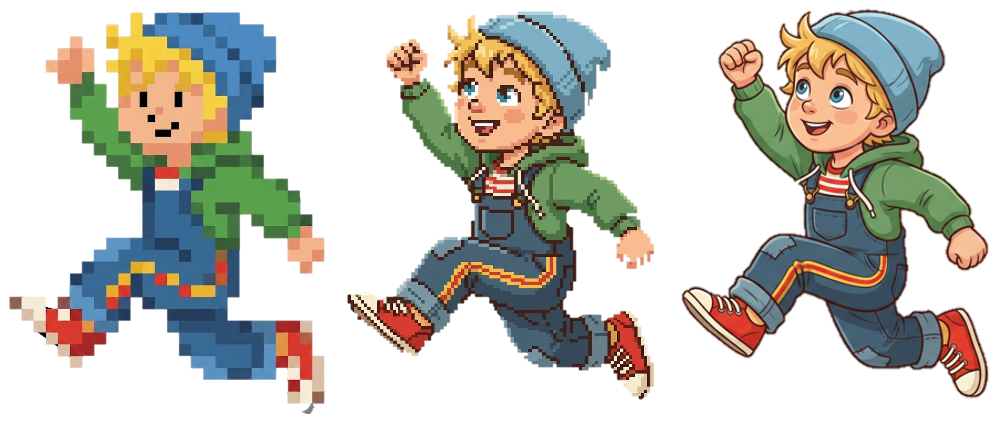
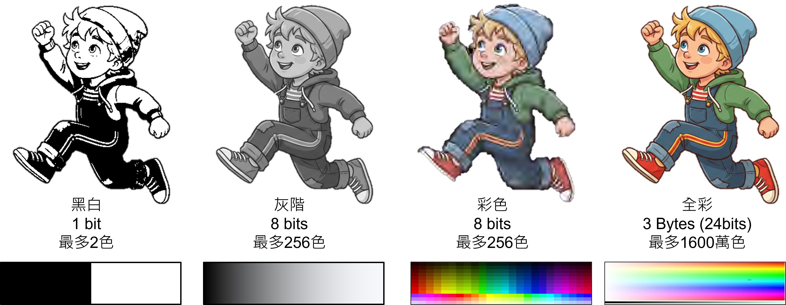
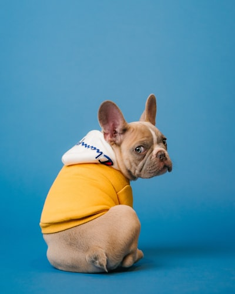

1. 透明背景的圖示優先選？
🎨
準備好挑戰了嗎？
在設定的時間內計算出RGB代碼，還原隨機動物圖案！
目前挑戰：神秘圖案❓0%
🎨 調色盤 (已解鎖的顏色)
點選顏色當畫筆，再次點選可取消尚未解鎖任何顏色，請點擊上方格子進行解碼。
🔍 目標像素解碼未選擇
請點選左側
未解鎖的格子
未解鎖的格子
🧮 二進位轉十進位小工具
-
從像素觀察到色彩編碼，探索螢幕裡的影像世界！
LEARNING GOALS
本課四個小步驟 · 點小卡切換
視覺觀察：請觀察下方三種不同解析度的「小男孩跳躍圖」。由左至右，描述它們在視覺上的第一印象差異（從模糊到精細）。
你有沒有發現最左邊的圖有一種「一格一格的鋸齒感」？
定義像素與取樣：這種鋸齒感就是「像素化」現象。這告訴我們，數位影像並不是一幅連續的畫，而是被「切割成數個小方格」拼湊而成的。這個將連續畫面切割成方格的過程，我們稱為「取樣」，而每一個方格，就是構成數位影像的基本單位——像素 (Pixel)。
💡 連結原理：影像越細膩，代表構成畫面的「格子（像素）」數量越多！
明顯鋸齒，像素方塊極大
輪廓漸清晰，邊緣仍可見方塊

細膩平滑，幾乎看不出像素點
現實世界中的畫面是連續的。要讓電腦理解，影像數位化的第一步，就是將連續的畫面切割成無數個小方塊（這就像在畫面上蓋上一張網格）。切得越密，代表取樣率越高，取得的樣本（像素）就越多。
切好網格後，每一格只能有一種顏色。我們評估該格最接近的色彩，並透過編碼（將顏色轉換成 0 與 1 的二進位數字）來記錄這格的色彩資訊，這個記錄的過程就稱為「量化」。
原黑白影像圖
經過取樣後，黑白影像被分割成400 (20×20) 個樣本
透過以下三個實境關卡，親自體驗影像「像素化」的過程，並扮演電腦將真實世界的畫面「取樣」與「量化」為數位資料吧！
滑動下方拉桿改變「解析度」，觀察畫面從「一格一格的馬賽克」變得清晰的過程。
你看出來圖片裡是什麼了嗎？
請選擇圖中的主體：
將游標移到下方圖片上，觀察「高解析度」與「低解析度」在局部放大細節上的差異。
載入中...
載入中...
💡 邏輯思考時間：看了這 3 組圖片後，如果想要讓圖片放大後依然清晰，取樣時切出的「格子」應該要？
體驗電腦如何將真實世界轉化為數位資料。在左側畫布隨意畫個簡單的形狀，接著扮演電腦的「量化器」，在右側網格上重現你的圖案，最後與電腦的演算法比對看看相似度！
重新操作提示：先選色票，再在量化格點選或按 Enter 上色。
決定每個格子可以塗上什麼顏色。這個決定顏色『精細度』的過程，就叫做量化 (Quantization)。
量化的位元 (bits) 數越高，顏色就越豐富、越真實，但佔用的記憶體空間也會越高。

「請看最左邊的小娃。這裡我們只給電腦 1 bit 的空間，也就是 21 = 2 種選擇。電腦只能在『黑』與『白』之間二選一。雖然你看得出這是一個小男孩，但所有的陰影、皮膚色、衣服顏色全部都消失了，只剩下輪廓。」
「中間的小娃進步了，我們給它 8 bits，28 = 256 種顏色。大家可以發現顏色變豐富了，有膚色、有藍色衣服。但仔細看（指向陰影處），顏色的過渡看起來一塊一塊的，不夠自然。這就像是只有 24 色的彩色筆，想畫出細膩的日落會有點困難。」
「最後，最右邊是我們現在最常見的 24 bits 全彩（RGB 各 8 bits）。它能變出 1,600 萬種顏色！這時候小娃的頭髮光澤、皮膚的紅潤、衣服的摺痕都能平滑呈現。對人類的眼睛來說，這已經跟真實世界看到的顏色一模一樣了。」
【核心總結】所以，量化的位元 (bits) 數越高，顏色就越豐富、越真實，但同樣地，每個像素佔用的記憶體空間也會隨之增加喔！
解碼RGB並還原神秘圖案，與時間賽跑！
在設定的時間內計算出RGB代碼，還原隨機動物圖案！
如果我們把圖片直接存進電腦，它會超級重！為了解省空間，我們需要把它「壓縮」。你可以想像成把衣服打包進出國用的收納袋裡：
就像打包時，偷偷把別人不會注意到的舊襪子直接丟掉。行李變得超級輕！
👉 電腦是刪除人眼看不見的細節（雖然失真，但檔案極小，肉眼幾乎看不出來差異）。
就像把衣服摺得非常整齊、重新排列組合再抽真空，什麼都沒丟掉。
👉 打開後衣服完全不失真，完美保留所有細節，不過檔案會比破壞性壓縮大一些。
為了應付不同的任務，電腦科學家發明了四位特攻隊員，它們各自有不同的超能力喔！
請幫忙判斷以下三個情境，最適合呼叫哪一位「格式特攻隊員」來幫忙呢？
小明去阿里山玩，拍了一張超級漂亮的日出風景照，色彩超級豐富，他想存進電腦裡並上傳 IG。
網頁設計師正在做學校的網站，需要放上學校的 Logo 校徽，而且背景必須是「透明」的才能融入網頁！
小華畫了一個只有 3 幀畫面、顏色很單純的「點點頭」動圖，他想用 Line 傳給好朋友看。
除了轉換格式，我們還可以用這兩種方式幫圖片減肥喔！點擊看看差異：

最原始的圖片，所有的顏色跟細節都在，看起來最漂亮，但是佔用的空間超級大！
WRAP-UP
我能區分：解析度、色彩深度與檔案大小並不相同。
我能說明：降低色彩或尺寸為何能減少檔案容量。
我能選擇：依透明背景、照片或動畫挑選圖片格式。
答對三題，取得本單元徽章。
1. 透明背景的圖示優先選？
2. 想讓照片檔案較小可優先選？
3. 降低解析度通常會？
從三題中找出你最需要再練習的概念。
PAIR TALK
要製作透明背景的社團 Logo 並放上網站，你會怎麼選？
選擇後，和同伴用「我選……因為……」說明你的理由。